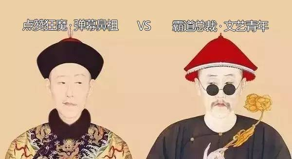
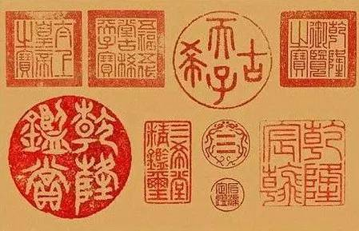
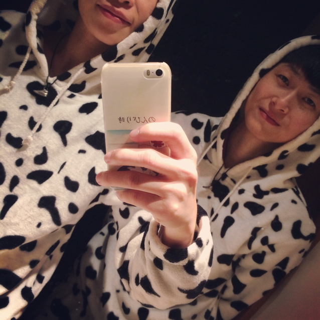
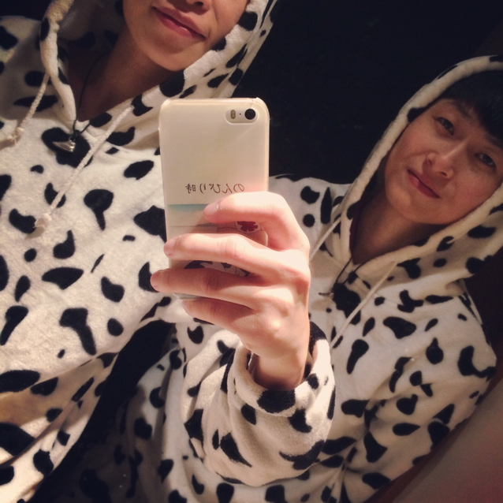

想去主菌
想去颜值担当
关注
乾隆"爹",雍正:"闭嘴",朕没你这农家乐审美的儿砸"

关于雍正和乾隆的审美
来看图说话
有没有感觉到大清朝的审美
到乾隆这儿画风陡然一变
一个是极简主义，一个是欢天喜地
一个是淡雅隽永，一个是繁缛富丽
在雍正低眉颔首内心翻滚着韬略时
乾隆却活蹦乱跳
展示着"村口开花了大家快去看啊"的热情
雍正的审美是业界公认的好
处处彰显着"少即是多 (Less is more)"
淡雅大气有中国文化精髓
毕竟四爷是隐忍四十多年
在不被看好时步步惊心才坐上龙椅
其毅力、野心、坚韧可见一般
而乾隆早年登基、前朝遗老只有一位
是一个一生风调雨顺不差钱的富二代
不好好学习也能过得很好哦
当然没太多文化造诣
审美也是如你们所见
乾隆爷最大的爱好
就是游山玩水瞎题字
对所有吃过的小吃
都赞不绝口并赋诗一首
我们也不能对这位
奏折批"放你的屁"的主儿抱太大希望
只是这些诗句经常跑到国宝级文物上面
这就让文物爱好者很痛心
看这个，题的啥诗
官窑莫辨宋还唐，火气都无有葆光，
便是讹传猧食器，蹴枰却识豢恩偿。
就是说这狗盆是宋代的还是唐代的呀？
人家是水仙盆好吗，而且是最珍贵的
就是无一丝裂缝，这一刻....
又刻一个
又罗列可以咯
只题字也没意思，还得落个款呐
据《乾隆宝澍》记，乾隆有印章1000多方
常用的就500多个，什么
【乾隆御览之宝】
【太上皇之宝】
【八征灏念之宝】
等等等，下次去博物馆好好瞅瞅
这位爷是怎么把国宝都盖上各种猪肉章
并获得尊称"爱新觉罗.牛皮癣"的

真的
假的
乾隆最爱晋人三贴
盖上章放进养心殿西暖阁以示珍爱

你们感受下这沉重的爱
一般人题字都注意不破坏画面
他题的字比原贴还大
在大臣吹捧下长大的乾隆根本不懂
什么叫"相形见绌"
一般名人题过字多的画都涨价
这字画哔哔哔地往下掉
不过话又说回来
雍正为乾隆奠定了经济基础
为人却保守内敛，重传承少创新
这父子俩唯一相似的地方
就是都热爱cosplay
喜欢把自己画成山人，隐士

最后奉上雍正行乐图
让大家感觉"朕就是这样的汉子"
20 喜欢

 


10 评论
美丽衣橱 02-17 10：04
说的很不错，给个赞
BiLoveTe爱情小学02-16 10：04
写得很有文采
红香萨克斯！02-16 10：04
乾隆真有品味